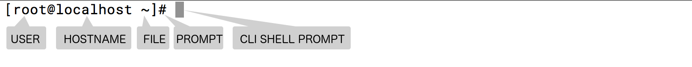
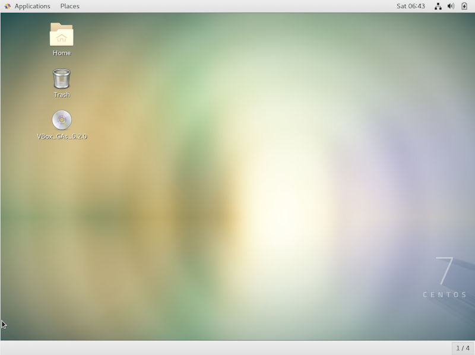

Administrator's Guide - Centos7
เมื่อทำการติดตั้ง Centos 7 สามารถทำการติดตั้งได้ทั้งแบบ minimal server หรือ Text mode และ แบบ Graphic Mode อยู่ที่รูปแบบการใช้งาน การใช้งาน Linux ปัจจุบันสามารถแบ่งออกได้เป็น
| การใช้งาน | รูปแบบ |
|---|---|
| Server | ใช้รองรับงานที่เป็น server ได้แก่ web, mail, Database เป็นต้น |
| Workstation | การใช้งานในองค์กร เน้นไปทาง Business environment, Programer, Scientific application |
| Desktop | เน้นการทำงานสำหรับผู้ใช้งาน office, media, Graphic Application |
การเชื่อมต่อผ่านทาง terminal (Linux CLI interface)
การเชื่อมต่อผ่านทาง Terminal เป็นการสื่อสารผ่านทาง text base ไปยังระบบปฎิบัติการโดยตรง เมื่อมีการพิมพ์ข้อความลงไปจะมี ตัวกลางคอยทำหน้าแปรความหมาย (Command line interpreter - shell) โดยโปรแกรม shell มีด้วยกันหลายชนิดด้วยกัน สำหรับ centos7 เรียกว่า bash shell
ตัวอย่าง หากต้องการเพิ่มเติม GUI interface ให้แก่ CLI interface สามารถทำได้ ดังนี้
[root@localhost ~]# yum group list
Loaded plugins: fastestmirror
There is no installed groups file.
Maybe run: yum groups mark convert (see man yum)
Loading mirror speeds from cached hostfile
* base: mirror1.ku.ac.th
* extras: mirror1.ku.ac.th
* updates: mirror1.ku.ac.th
Available Environment Groups:
Minimal Install
Compute Node
Infrastructure Server
File and Print Server
Basic Web Server
Virtualization Host
Server with GUI
GNOME Desktop
KDE Plasma Workspaces
Development and Creative Workstation
Available Groups:
Compatibility Libraries
Console Internet Tools
Development Tools
Graphical Administration Tools
Legacy UNIX Compatibility
Scientific Support
Security Tools
Smart Card Support
System Administration Tools
System Management
Done
เลือกติดตั้ง
# yum group install "Server with GUI" "Graphical Administration Tools" -y
เลือก target
| Run Level | Target Unit | Description |
|---|---|---|
| 0 | runlevel0.target, poweroff.target | Shutdown and power off |
| 1 | runlevel1.target, rescue.target | Set up a rescue shell |
| 2,3,4 | runlevel[234].target, multi- user.target | Set up a nongraphical multi-user shell |
| 5 | runlevel5.target, graphical.target | Set up a graphical multi-user shell |
| 6 | runlevel6.target, reboot.target | Shut down and reboot the system |
แสดง systemd runlevel target
# find / -name "runlevel*.target"
/usr/lib/systemd/system/runlevel6.target
/usr/lib/systemd/system/runlevel0.target
/usr/lib/systemd/system/runlevel1.target
/usr/lib/systemd/system/runlevel2.target
/usr/lib/systemd/system/runlevel3.target
/usr/lib/systemd/system/runlevel4.target
/usr/lib/systemd/system/runlevel5.target
ตรวจสอบ default target ของระบบปัจจุบัน
# systemctl get-default
multi-user.target
เปลี่ยนแปลงให้เป็น graphic.target
# systemctl set-default graphical.target
Removed symlink /etc/systemd/system/default.target.
Created symlink from /etc/systemd/system/default.target to /usr/lib/systemd/system/graphical.target.
default target ใหม่จะยังไม่เปลี่ยน จะต้อง รอให้มีการ reboot หากต้องการให้มีการเปลี่ยนทันที โดยไม่ต้องการ reboot
# systemclt default
== or ==
# systemctl isolate default.target
ตัวอย่างหน้าจอ GUI

สำหรับการใช้งานบน VirtualBox
# yum install dkms binutils gcc make patch libgomp glibc-headers glibc-devel kernel-headers kernel-devel
# cd /run/media/vagrant/VBox_GAs_5.2.0/
# bash VBoxLinuxAdditions.run